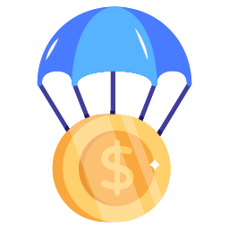

Airdrop
-
Airdrop
genellikle bir kripto para veya blockchain projesinin tanıtımını yapmak, topluluğunu büyütmek veya kullanıcılarına ödül dağıtmak amacıyla ücretsiz token veya kripto paraların belirli bir kitleye dağıtılmasıdır. Bu dağıtım genellikle belirli şartları yerine getiren kullanıcılara yapılır.
Airdrop Nedir?
Airdrop, bir kripto para projesi veya şirketin, belirli bir dönemde belli bir topluluğa ücretsiz token veya coin dağıtmasıdır. Bu dağıtım, genellikle belirli koşulları yerine getiren kullanıcılara veya belirli bir kripto para cüzdanını kullananlara yöneliktir. Airdrop, projenin başlangıcında veya daha sonraki aşamalarında gerçekleştirilebilir.
Airdrop Nasıl Çalışır?
- Tanıtım ve Topluluk Oluşturma: Yeni bir kripto para projesi, hedef kitlesini genişletmek, topluluk oluşturmak ve projenin bilinirliğini artırmak amacıyla airdrop düzenleyebilir.
- Koşullar ve Katılım: Airdrop'a katılmak isteyen kişiler genellikle belirli koşulları yerine getirmelidir.
- Ücretsiz Dağıtım: Katılımcılar koşulları yerine getirdiklerinde, projenin belirlediği oranda ücretsiz token veya coin alırlar.
- Hedeflenen Kitle: Airdrop'lar, genellikle belirli bir kripto para borsasında listelenmiş coin sahiplerine, projeyi sosyal medyada paylaşanlara veya belirli bir kripto para cüzdanını kullananlara yöneliktir.
- Tanıtım ve Pazarlama: Airdrop, projenin tanıtımını yapmak ve pazarlama stratejisi olarak kullanılır.
First Content
- https://www.gate.io/tr/startup https://www.binance.com/tr/support/announcement/
İlk Çıkacak Coinleri Nereden Görebilirim
İşte birkaç kaynak
Yeni Çıkan Coin'lerin
Avantajlar ve Dezavantajlar
Avantajlar
- 1-Yüksek Potansiyel Getiri: Yeni çıkan coin'ler genellikle düşük fiyatlarla başlar ve potansiyel olarak hızla değer kazanabilir. Bu durum, yatırımcılara büyük getiriler sağlama fırsatı sunabilir.
- 2-Yenilikçi Teknoloji ve Çözümler: Yeni coin'ler, kripto para dünyasına özgün teknolojiler ve çözümler getirerek sektöre yenilik katar. Bu, daha güvenli, ölçeklenebilir ve verimli işlemlere olanak tanıyabilir.
- 3-Erken Benimseme Avantajı: Yeni bir coin'e erken yatırım yapmak, projenin değer kazandıkça yatırımcılara büyük avantajlar sağlayabilir. Erken benimseme, coin'in gelecekteki başarısı için kritik olabilir.
- 4-Topluluk Katılımı ve Şeffaflık: Yeni coin'ler genellikle güçlü bir topluluk tarafından desteklenir. Bu topluluk katılımı, projenin gelişimine katkıda bulunur ve şeffaflığı artırarak güven oluşturabilir.
- 5-Esneklik ve İnovasyon: Yeni çıkan coin'ler, hızla değişen kripto para ekosistemine uyum sağlamak için daha esnek olabilir. Bu durum, projelerin zaman içinde gelişen gereksinimlere daha iyi adapte olmalarına olanak tanır.
- 6-Alternatif Yatırım Fırsatları: Yeni coin'ler, geleneksel finansal araçlardan farklı ve alternatif yatırım fırsatları sunabilir. Bu çeşitlilik, yatırımcıların portföylerini genişletmelerine ve risklerini dağıtmalarına yardımcı olabilir.
Dezavantajlar
- 1-Yüksek Risk: Yeni çıkan coin'ler genellikle henüz piyasada deneme aşamasındadır ve bu nedenle daha yüksek risk taşır. Değerleri hızla değişebilir ve yatırımcıları büyük zararlara uğratabilir.
- 2-Likit Olmama Durumu: Yeni coin'ler genellikle düşük piyasa likiditesine sahiptir. Bu durum, büyük miktarlarda alım satım işlemi yapmak isteyen yatırımcılar için sorun teşkil edebilir ve fiyat manipülasyonlarına açık hale getirebilir.
- 3-Güvenilirlik Sorunları: Yeni projelerin arkasındaki ekip ve teknoloji hakkında yeterli bilgi olmayabilir. Dolandırıcılık ve sahtekârlıklar, kripto dünyasında maalesef yaygın olduğundan, yatırımcılar için güvenilirlik sorunları ortaya çıkabilir.
- 4-Rekabetle Başa Çıkma Zorluğu: Kripto para piyasası rekabetçidir ve birçok yeni coin, benzer projelerle rekabet etmek zorundadır. Başarılı olmak için güçlü bir rekabet avantajı geliştirmek zordur.
- 5-Hızlı Değer Kaybı: Yüksek volatilite nedeniyle, yeni çıkan coin'ler hızla değer kaybedebilir. Bu durum, yatırımcılar için ani zararlar anlamına gelebilir.
- 6-Regülasyon Riski: Yeni çıkan coin'ler, henüz regülatörler tarafından tam olarak düzenlenmemiş olabilir. Bu durum, gelecekteki düzenlemelerden etkilenebilecekleri anlamına gelir. Regülasyon değişiklikleri, projelerin başarısını olumsuz yönde etkileyebilir.